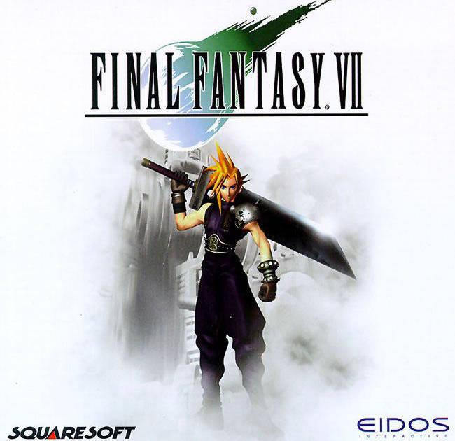

Final Fantasy VII |
||
|---|---|---|
|  | Sinopsis: Final Fantasy VII sigue la línea argumental independiente de su predecesor mostrándonos en esta ocasión un mundo distópico en el cual su protagonista, un mercenario llamado Cloud Strife, ex-integrante de SOLDADO, se une a un grupo de terrorismo ambiental conocido como AVALANCHA, el cual se enfrenta a los planes de la mega corporación Shin-ra Inc. que se encuentra drenando actualmente la energía del planeta donde se desarrolla el juego para alimentar sus reactores Mako para generar energía menos costosa para sus habitantes, provocando sin saberlo un peligro sin precedentes en el mundo. Conforme la historia progresa, Cloud y sus aliados no solamente tendrán que lidiar con Shin-ra, sino con un viejo conocido del pasado de Cloud, un hombre llamado Sefirot quien no se detendrá ante nada ni nadie para destruir al mundo en una misión de venganza personal. |
Desarrollador:Square Plataformas:PlayStation 1, Microsoft Windows, iOS, PlayStation 4, Año: 1997 Duracion:30 horas aprox Pais:Japon |
Criticas Profesionales:Salvador BarrancoSin duda alguna, este es de los mejores juegos de ROL de la historia, cuenta con una increíble historia, unos grandes personajes en ella, y sin duda uno de los mejores prota de todos los Juegos para mi, Cloud Strife, el juego te hace sentir muy libre y sientes esa libertad immensa que tiene un buen juego de ROL ya que el mapa es enorme con muchos secretos, un juego que sin duda alguna es LEYENDA. |
Trailer |
Obtener:AlquilarComprar |
Registrate/Iniciar Sesion